The Lead Taker Tool
This is your one-stop workspace for taking a new client lead. From a single set of call notes, it checks caregiver availability, fills out the HubSpot deal, notifies your market on Teams, drafts a thank-you email, and generates the Client Service Agreement — so nothing gets missed and you stay on the phone with the family, not in five browser tabs.
What this tool is — and when to use it
When a referral partner or family member calls in about a new client, open the Lead Taker Tool. You'll type or photograph your call notes, and the tool does the heavy lifting: it tells you whether we can staff the case, captures everything into HubSpot the way it should be entered, and sets up the follow-ups. Use it for every new lead — it's how we keep our data clean and our answers to families accurate.
1Getting connected (first time only)
The first time you open the tool, you'll see a “Let's get you connected” screen. The tool works on your behalf across three systems, so it needs you signed in to all three before you can start:
- Microsoft — so it can post to Teams and send email from your Outlook.
- HubSpot — so the deal is created under your name, with your pipeline.
- Docusign — so Client Service Agreements go out as you.
Click Connect on each one and follow the quick sign-in. When all three show a green ✓, the “Enter the tool” button unlocks.
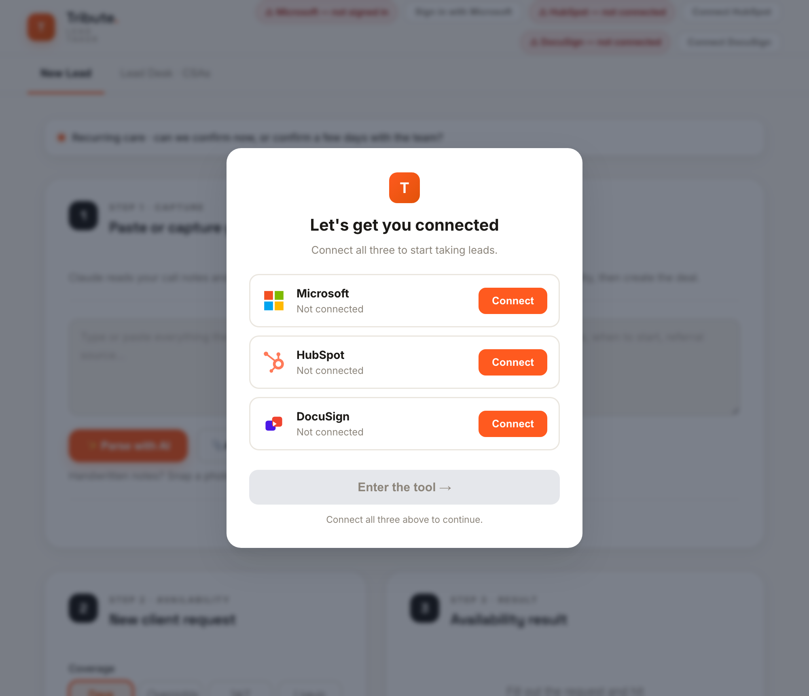
2Taking a lead — the 7-step flow
Everything for a new lead happens on the New Lead tab, in seven clearly-numbered steps. Here's each one.
Step 1 — Capture the notes
Type or paste everything the caller told you into the big box — who called, who needs care, where they live, the schedule, when they want to start, and who referred them. Don't worry about formatting; write it the way you'd jot it on a call. Then click ✨ Parse with AI and the tool reads your notes and fills in the rest of the page for you.
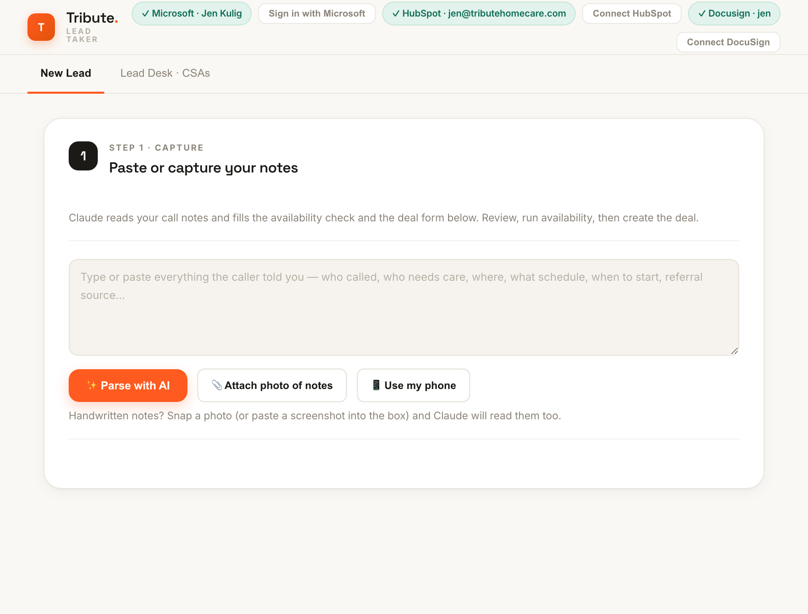
Step 2 — Check availability
The tool fills in the client request from your notes — coverage type (days, overnights, 24/7, live-in), schedule, address, start date, and any preferences (gender, driver, pets, parking, etc.). Review it and fix anything that's off, then click Check Availability.
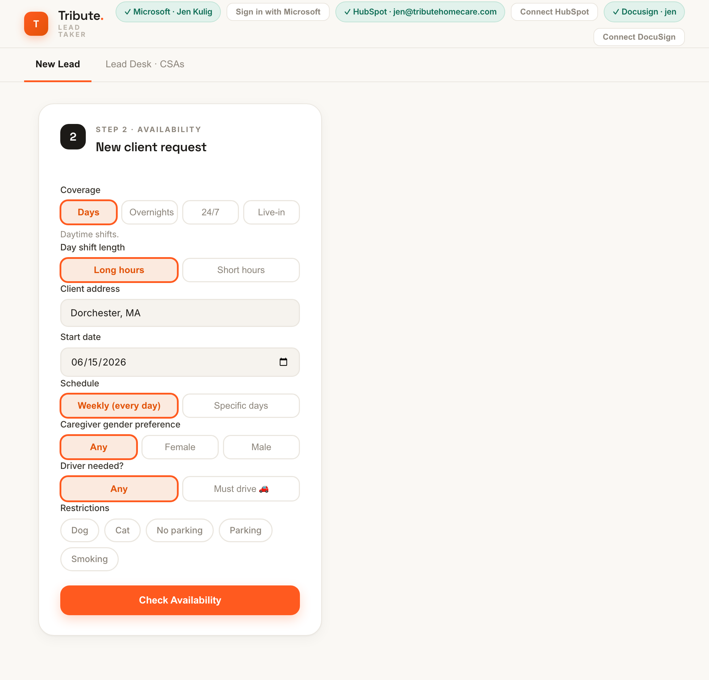
Step 3 — Read the result
This is the answer you give the family. At the top you'll see a plain verdict:
- ✓ YES — you can confirm: we have real, bookable coverage. Book it with confidence.
- ⚠️ Hedge — let me confirm a few days: we can cover most of it, but some days aren't guaranteed. Confirm those with your scheduling team before promising.
Under that, “Confirm now” lists the days/nights that are solid and “Confirm with my team” lists the ones that aren't. The “Say to the caller” box gives you word-for-word language you can use on the phone. Need more detail? Click Show availability details for the full day-by-day grid and to ask a follow-up question.
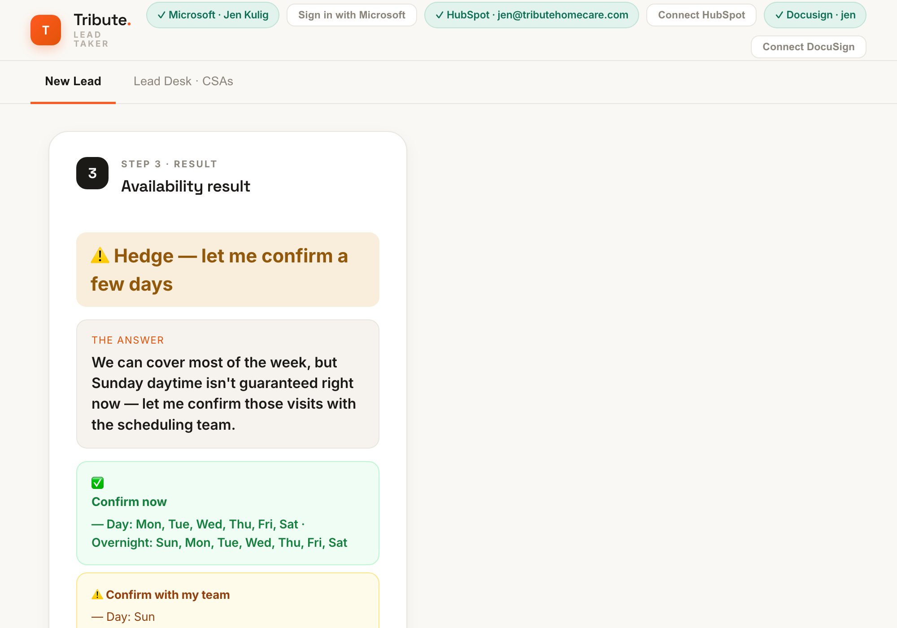
Step 4 — Review the deal
The tool has filled out the full HubSpot deal from your notes — caller and client details, care needs, market, amount, referral source, and more. Scan it and tweak anything the AI got wrong before you create it. The market is set automatically from the client's town, and the weekly amount is estimated from the market rate card.
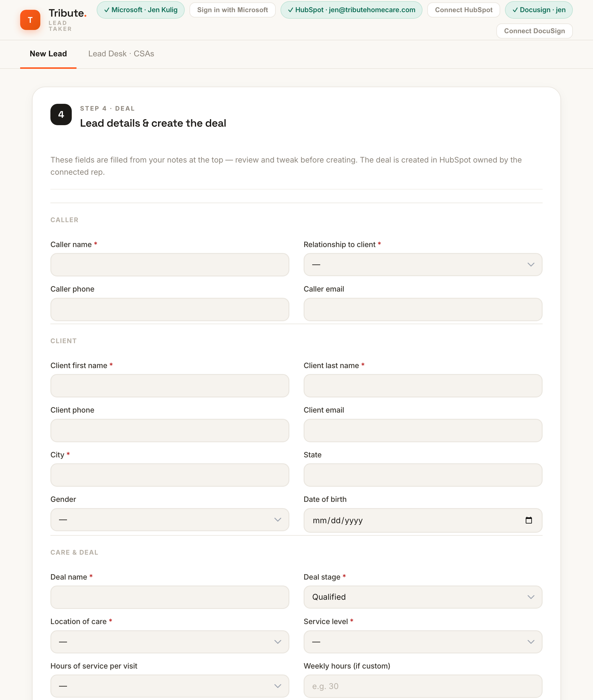
Step 5 — Post to Teams
Pick the Teams channel for your market and review the short summary the tool drafted. This is how your market team gets a heads-up on the new lead. You can edit the subject and the summary before it goes.
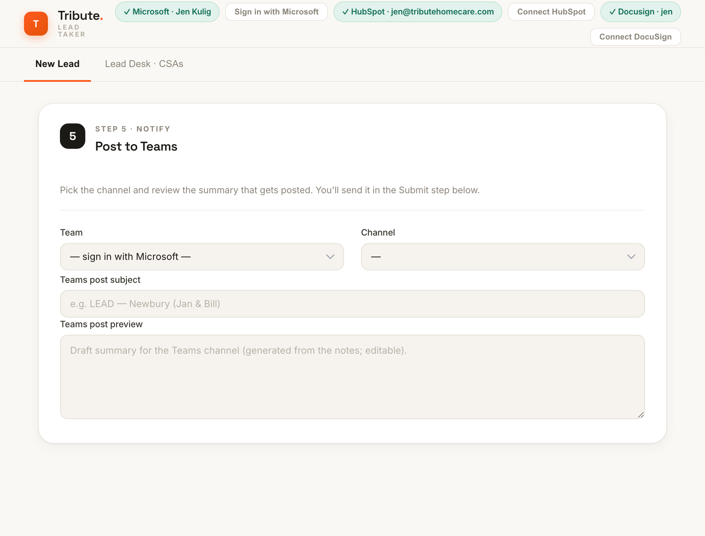
Step 6 — Submit
This is the commit step. You have three options:
- Create HubSpot deal — just creates the deal.
- Post to Teams — just posts the summary.
- Create deal & post to Teams — does both in one click (the usual choice).
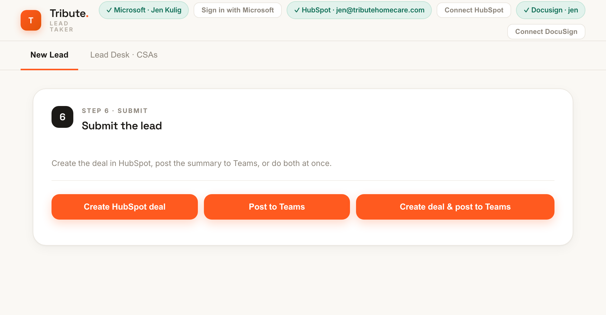
Step 7 — Follow-up email
Finally, the tool drafts a follow-up email in Tribute's voice — either a thank-you to the referral source or a follow-up to the family. Pick who it's to, click ✨ Draft with AI, review and edit, then Send from Outlook — it goes from your own account.
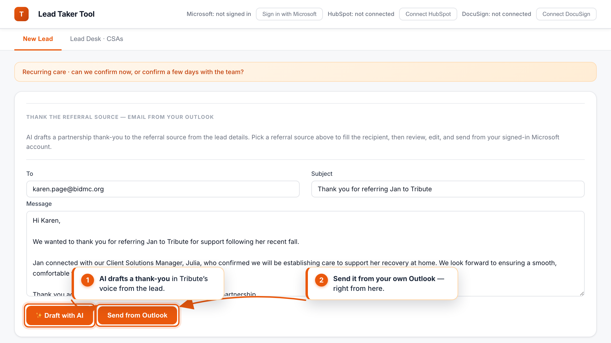
3Using your phone for handwritten notes
Took the call on paper? You have three easy ways to get those notes into the tool:
- Attach photo of notes — pick a photo from your computer.
- Paste a screenshot — copy an image and paste it straight into the notes box with ⌘+V.
- Use my phone — the easiest for handwriting. Click it and a QR code appears. Scan it with your phone camera, take a photo of your notes, and it appears in the tool automatically.
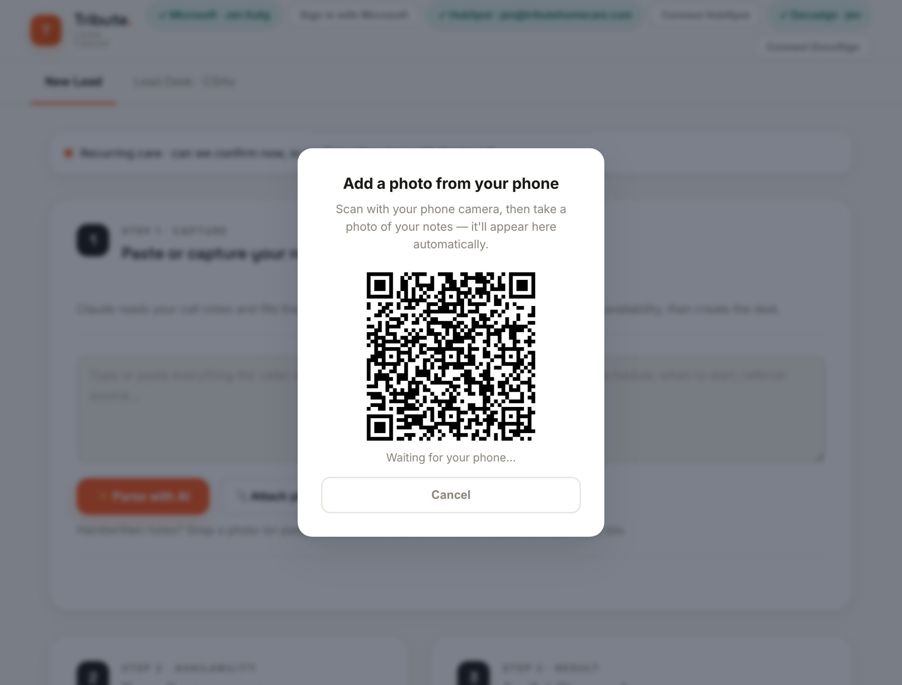
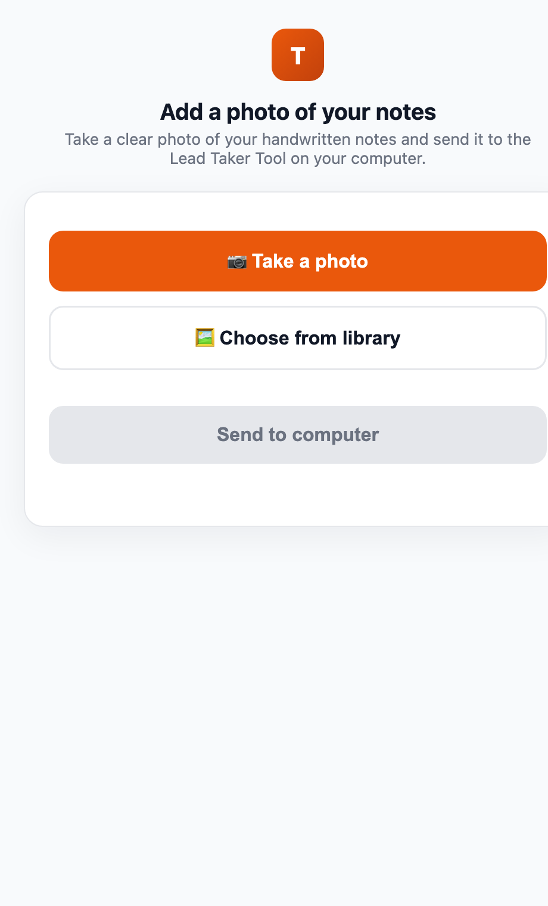
However the photo gets in, just click ✨ Parse with AI and Claude reads the handwriting into the form like any other notes.
4The Lead Desk — generating a CSA
Switch to the Lead Desk · CSAs tab to send a Client Service Agreement. It shows every deal that's reached the Qualified stage and is waiting on a CSA. Click a client, review the pre-filled agreement (the right regional template is picked automatically), and generate the Docusign draft — sent as you.
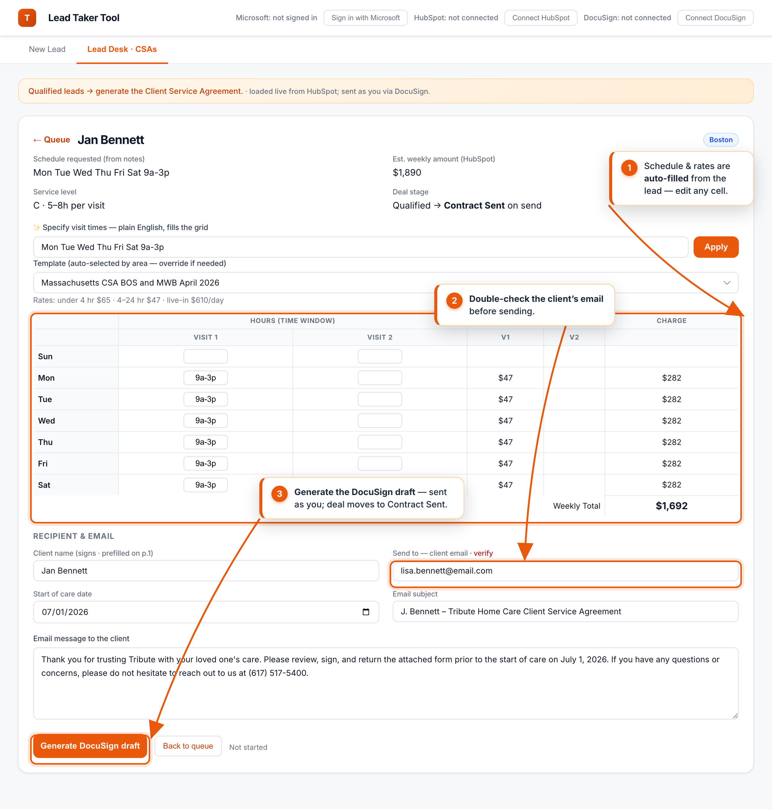
5Tips & troubleshooting
- A connection pill turned red. Click it and reconnect — the tool needs all three (Microsoft, HubSpot, Docusign).
- The AI got a field wrong. That's expected sometimes — always give the deal and the request a quick review before creating. You can edit any field.
- The market looks wrong. It's set from the client's town. If the town wasn't captured, set the Market/region dropdown yourself.
- Availability says “Hedge.” That's the tool being honest — some days aren't guaranteed. Confirm those with your scheduling team before promising the family.
- Nothing happens on “Parse with AI.” Make sure there are notes (or a photo) in the box first.
- Always work top-to-bottom. The steps build on each other — capture → availability → deal → Teams → submit → email.